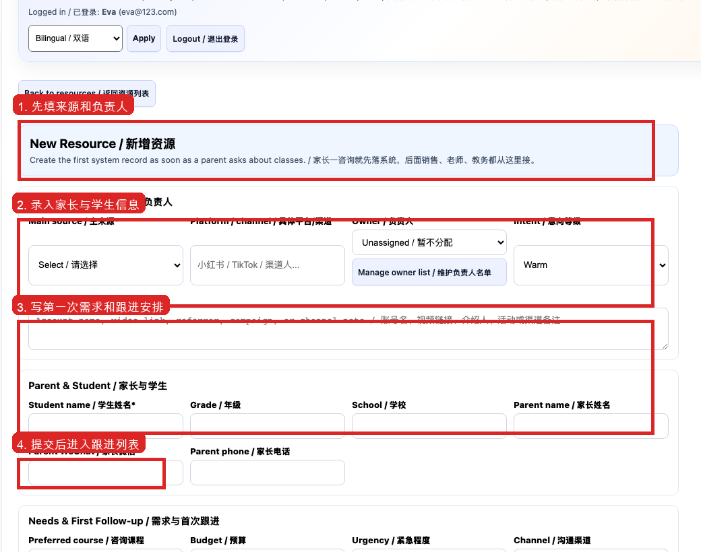
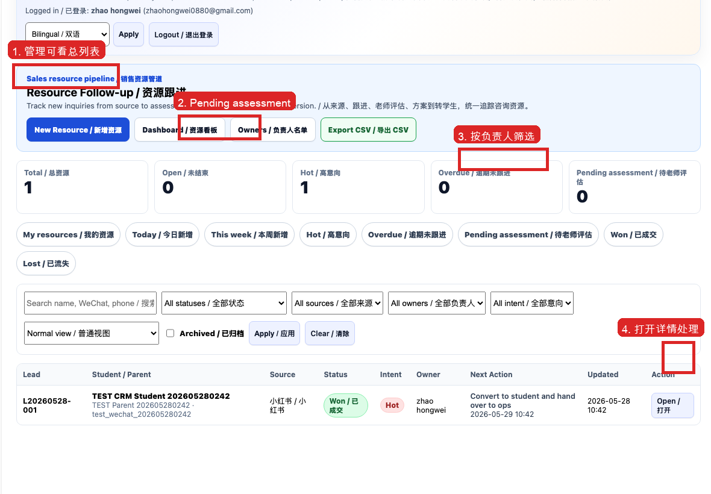
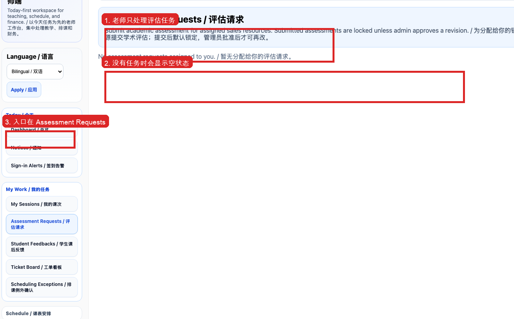

SGT MANAGE / TRAINING SOP
资源跟进、学校指南咨询与成交交接
从咨询进入系统到评估、成交和教务承接
适用角色CS / Sales / Admin
系统入口Resource Follow-up / 资源跟进
版本2026-07-28
截图来自真实系统培训场景或已验证的正式流程截图；培训实操必须使用培训数据。
MUST KNOW / 先记住
开始操作前的强制规则
- 先查重再新增资源。
- 每次跟进必须有结果、下一步和日期。
- 学校指南咨询只能依据已核实资料，不承诺录取概率。
- 成交后必须交接到学生、合同或排课工单，不能停在聊天记录。
页面、权限或状态与 SOP 不一致时，停止会影响课包、财务、工资、合同、家长可见内容或真实课次的操作，并向主管确认。
STEP 1
资源入口
确认咨询来源、家长学生基本信息、意向课程/学校和隐私同意。学校指南咨询进入同一资源池。

真实系统截图：按本页说明核对入口、状态和最终结果。STEP 2
查重与负责人
按电话、微信、邮箱和学生姓名查重。命中开放资源时不覆盖原负责人。

真实系统截图：按本页说明核对入口、状态和最终结果。STEP 3
记录跟进
每次沟通写事实、家长关注、已回答内容、待确认问题、下一步和截止日期。
 真实系统截图：按本页说明核对入口、状态和最终结果。
真实系统截图：按本页说明核对入口、状态和最终结果。STEP 4
老师评估
需要学术判断时发起老师评估，写清学生背景、问题和期望返回时间。

真实系统截图：按本页说明核对入口、状态和最终结果。STEP 5
学校指南边界
智能选校结果用于优先了解和风险提示，不是录取保证；费用、资格和截止日期以官方来源及最新复核为准。
本步检查- 负责人明确
- 状态与证据一致
- 下一步和日期完整
- 高风险操作已复核
STEP 6
成交交接
确认成交内容、负责人和下一步后，建立学生、家长资料、合同或排课工单。
本步检查- 负责人明确
- 状态与证据一致
- 下一步和日期完整
- 高风险操作已复核
STEP 7
未成交与重新打开
记录真实原因和允许再次联系的时间。归档不等于删除；重新联系时保留历史。
本步检查- 负责人明确
- 状态与证据一致
- 下一步和日期完整
- 高风险操作已复核
STEP 8
主管复盘
检查无负责人、长期无下一步、逾期和重复资源，避免咨询依赖个人微信。
本步检查- 负责人明确
- 状态与证据一致
- 下一步和日期完整
- 高风险操作已复核
ASSESSMENT / 知识检查
完成阅读后回答
- 页面与截图不一致时，哪类操作必须停止并找主管确认？
- 什么证据能够证明流程真正完成，而不是只点击了按钮？
- 等待家长、学校或老师回复时，系统中必须留下什么？
- 涉及课包、财务、工资或家长发布时，最终复核哪些状态？
- 发现自己走错入口后，正确的更正和升级方式是什么？
系统培训中心按 100 分评分，80 分及格。未通过需重新阅读当前版本。